Работа с SVN через TortoiseSVN. 4. Обновление до ревизии, авторство, отмена ревизии
Обновление до ревизии
Чтобы выгрузить в рабочую копию версию определенной ревизии есть несколько способов.
Указать ревизию при извлечении рабочей копии
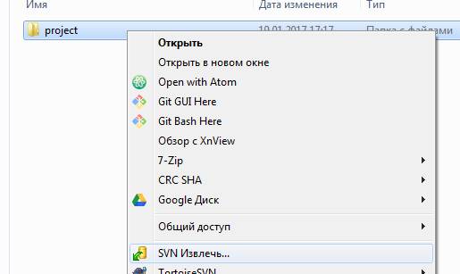
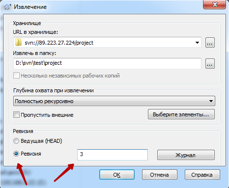
В уже извлеченной рабочей копии использовать диалог Обновить до ревизии...

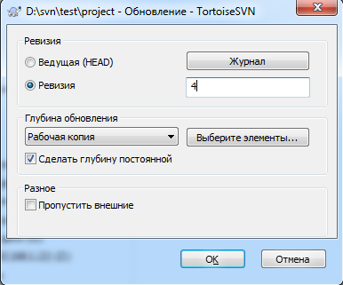
Через Журнал
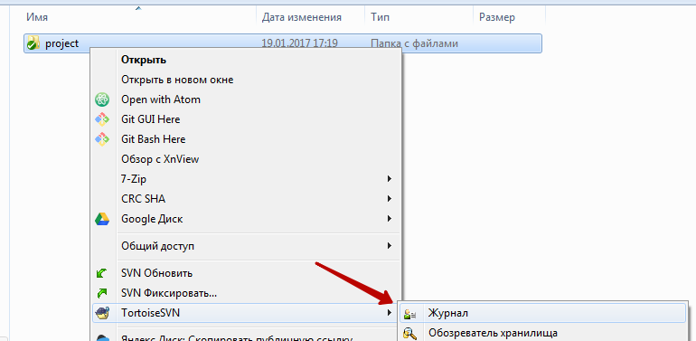
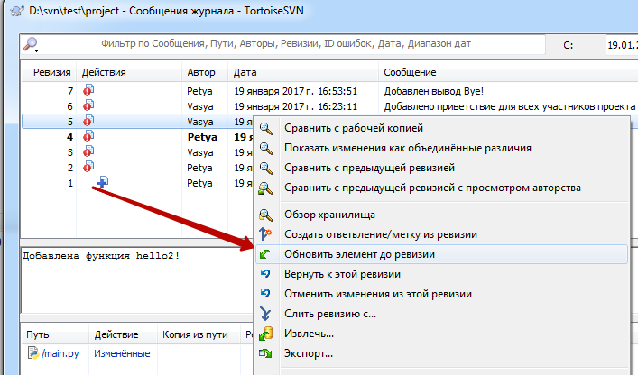
Авторство
Окно Авторство показывает кто менял какие-то определенные строки в файле, вызывается в через контекстное меню на файле
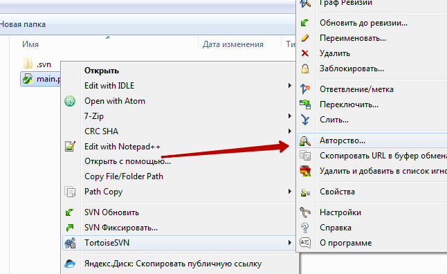
Параметры нужны для сложных случаев, оставляем по умолчанию.
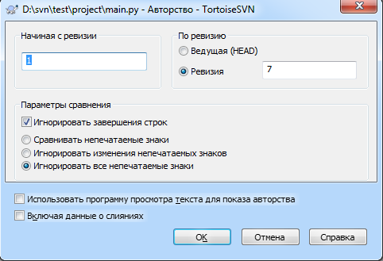
В появившемся окне напротив каждой строки видно пользователя который последний вносил в неё изменения и номер ревизии в которой это произошло.
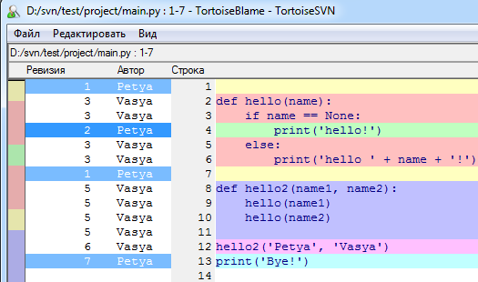
Через контекстное меню можно запустить журнал и посмотреть подробную информацию о фиксации в которой сделано изменение.
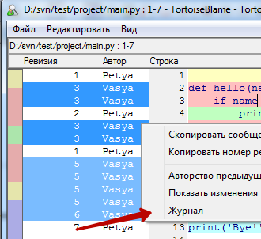

Отмена фиксации
Удалить зафиксированную ревизию из SVN нельзя. Можно только внести и зафиксировать изменения обратные добавленным.
Сперва нужно обновится на последнюю ревизию
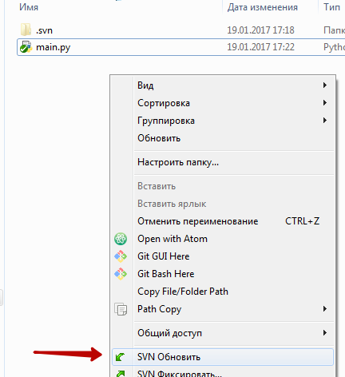
Открыть журнал и в контекстном меню нужной ревизии выбрать пункт Отменить изменения из этой ревизии.
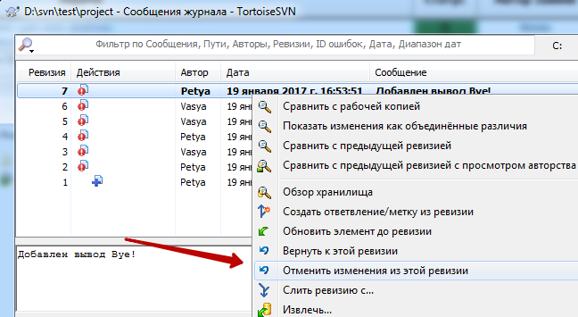
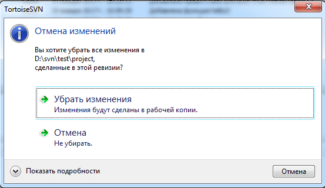
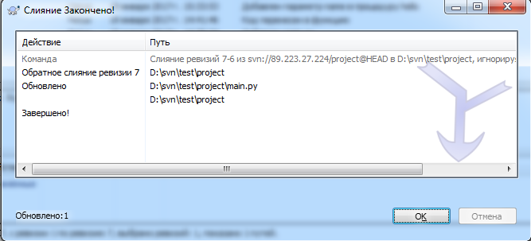
После этого в рабочей копии появятся изменения обратные выбранной ревизии.
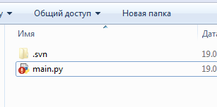
Останется только их зафиксировать
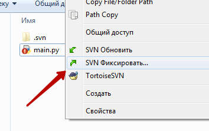
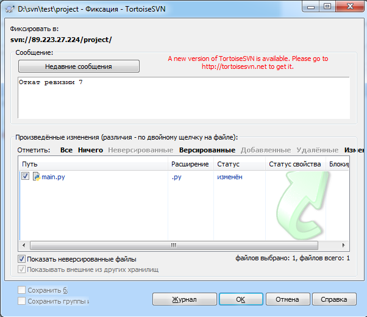